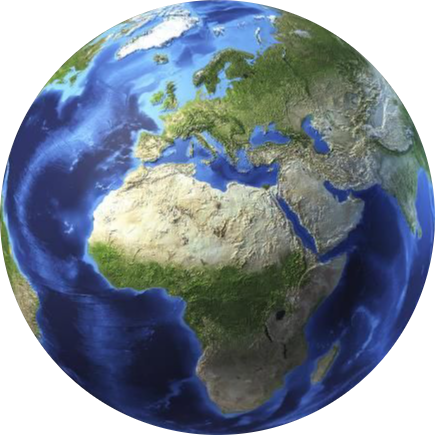
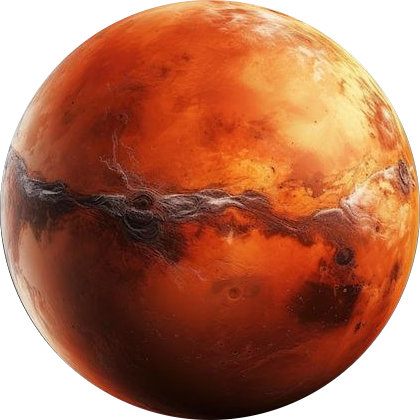

First Human in Space - Yuri Gagarin(1961) On April 12, 1961, Soviet cosmonaut Yuri Gagarin made history by becoming the first human to journey into outer space. This event marked a significant milestone in the Cold War space race between the United States and the Soviet Union. Gagarin's spacecraft, Vostok 1, completed one orbit around the Earth in 108 minutes, reaching a maximum altitude of 327 kilometers (203 miles).
Gagarin's achievement was both a scientific and political triumph for the Soviet Union. It demonstrated the capability to send a human into space and safely return them to Earth, a feat that had enormous implications for future space exploration. Gagarin instantly became a global hero, celebrated not only in the USSR but also internationally. His iconic phrase, "Poyekhali!" ("Let's go!") as Vostok 1 took off, became symbolic of humankind's daring quest to explore the unknown.
On July 20, 1969, the United States accomplished one of the most significant milestones in human history with the Apollo 11 mission, when Neil Armstrong and Buzz Aldrin became the first humans to walk on the Moon. Their colleague, Michael Collins, remained in lunar orbit aboard the Command Module Columbia, while Armstrong and Aldrin descended to the Moon's surface in the Lunar Module Eagle.
Armstrong's famous words as he stepped onto the lunar surface, "That's one small step for [a] man, one giant leap for mankind," captured the monumental nature of the achievement. The astronauts spent approximately 21 hours on the Moon, conducting experiments, collecting lunar soil and rock samples, and planting the American flag. The mission demonstrated the potential of human space exploration, inspiring generations to pursue space science and exploration.
The Apollo 11 mission was not just a scientific achievement but also a symbolic victory for the United States during the Cold War, showcasing its technological prowess in the space race against the Soviet Union. Apollo 11 remains a pivotal moment in space history, embodying the human spirit of exploration and curiosity.
The International Space Station (ISS) is a remarkable testament to global cooperation in space. Launched in November 2000, the ISS has been continuously occupied by astronauts from various countries, becoming a symbol of peaceful international collaboration. It orbits the Earth at an altitude of about 400 kilometers (250 miles) and serves as a unique laboratory for scientific research and technology development in microgravity.
The ISS is a joint project involving NASA (United States), Roscosmos (Russia), JAXA (Japan), ESA (Europe), and CSA (Canada). Over the years, astronauts aboard the ISS have conducted thousands of experiments across various fields, including biology, physics, astronomy, and material sciences. The station has also contributed to advancements in medicine, climate research, and engineering.
The ISS plays a crucial role in preparing for future missions to the Moon and Mars, as it allows astronauts to test the effects of long-duration spaceflight on the human body. As of now, the ISS is expected to operate at least until 2030, after which it may be replaced by commercial space stations or new government-led projects.
Space tourism is rapidly becoming a reality, with companies like SpaceX, Blue Origin, and Virgin Galactic leading the charge. These private firms are offering suborbital and orbital flights for civilians, opening the door for non-astronauts to experience space travel. Virgin Galactic, for instance, has begun taking tourists on short suborbital flights, allowing passengers to experience weightlessness and see Earth from space for a few minutes before returning.
SpaceX, meanwhile, is pushing the boundaries by offering longer, more ambitious trips. Its Inspiration4 mission successfully sent civilians into orbit for three days in 2021, and future plans include sending private passengers around the Moon. Blue Origin, founded by Jeff Bezos, also offers suborbital flights through its New Shepard rocket, making space more accessible to those with the means to pay
Human exploration of Mars has long been a goal for space agencies around the world. Both NASA and private companies like SpaceX are working toward sending humans to the Red Planet by the 2030s. Mars is viewed as the next great frontier for human space exploration, with the potential for discovering evidence of past life, resources for future colonies, and the ability to extend human presence beyond Earth.
Meanwhile, SpaceX is leading efforts with its Starship vehicle, designed to carry humans to Mars. The company's long-term vision involves building a self-sustaining colony on Mars, which would allow humanity to become a "multiplanetary species." The challenges are immense: long-duration space travel, radiation exposure, and creating life support systems on Mars. But the technological and scientific progress in recent years has brought us closer than ever to realizing this goal.
NASA's Artemis program, focused on returning humans to the Moon, is seen as a stepping stone for human Mars missions. By developing the infrastructure and technology to support sustainable operations on the Moon, space agencies hope to learn how to live and work on Mars.
Time travel has fascinated humans for centuries, appearing in myths, stories, and science fiction. It imagines moving through time, either to the past or future, beyond normal life.
Einstein's theory of relativity suggests time travel could be possible under extreme conditions, like moving near the speed of light. Wormholes, if they exist, might also provide shortcuts through time.
However, traveling to the past raises paradoxes, like the grandfather paradox, where changing history could alter the future. Though still a dream, time travel continues to inspire imagination and scientific curiosity.
Here are ten notable alien encounter incidents that have captured public attention over the years:
1. Roswell Incident (1947): A mysterious object crashed near Roswell, New Mexico, sparking theories about extraterrestrial spacecraft and government cover-ups. The U.S. military initially stated it was a "flying disc," later claiming it was a weather balloon.
2. Phoenix Lights (1997): Thousands of people reported seeing a massive V-shaped formation of lights over Phoenix, Arizona. The incident remains unexplained, with theories ranging from military flares to alien spacecraft.
3. Betty and Barney Hill Abduction (1961): The Hills claimed to have been abducted by aliens while driving in New Hampshire. Their detailed account included a star map and medical examinations, which became a landmark case in UFO lore.
4. Travis Walton Abduction (1975): Logger Travis Walton disappeared for five days after encountering a UFO in Arizona. He later described being taken aboard the craft, leading to widespread media coverage and a film adaptation.
5. The Rendlesham Forest Incident (1980): Often referred to as "Britain's Roswell," this incident involved U.S. military personnel witnessing unexplained lights and a triangular craft near a military base in Suffolk, England.
6. The Westall UFO Encounter (1966): Over 200 students and teachers at Westall High School in Melbourne, Australia, reported seeing a flying saucer hover over the school. The event was captured in photographs, but official explanations remain elusive.
7. The Allagash Abductions (1976): Four friends claimed to have been abducted by aliens during a camping trip in Maine. They underwent hypnosis to recall their experiences, which included similar details of medical examinations.
8. The Kelly-Hopkinsville Encounter (1955): Residents of Kelly and Hopkinsville, Kentucky, reported a confrontation with small, humanoid creatures outside a farmhouse. The incident led to a gunfight and remains one of the most famous cases of alleged alien contact.
9. The Tic Tac UFO Incident (2004): U.S. Navy pilots encountered a fast-moving, tic-tac-shaped object off the coast of California. The incident gained renewed attention after the release of military footage and official acknowledgment of UFO investigations.
10. The Stephen Greer Disclosure Project (2001): Dr. Steven Greer gathered testimony from numerous former military and government officials claiming knowledge of extraterrestrial encounters and cover-ups, sparking public interest in UFO phenomena.
A parallel universe is the eerie idea that countless worlds exist right beside ours—hidden, unreachable. In these universes, reality twists: events unfold differently, versions of us live alternate lives. Imagine crossing into one, where the familiar feels wrong, where the laws of physics warp. It's a concept from the multiverse theory, shrouded in mystery, lurking at the edges of science, leaving us to wonder: what if another world is just a step away?
Imagine a reality where countless universes exist side by side—parallel worlds, unseen but just a breath away. Each universe, a twist in the fabric of space, holds different versions of us, where decisions lead to new paths, creating endless possibilities. Quantum mechanics suggests that every choice we make could spawn a new universe, a place where things played out differently.
 Mercury
Mercury
 Earth
Earth
 Mars
Mars
Click on any planet or the sun to learn more!
| Date | Camera Name |
|---|---|
| 2016-08-05 | MAST |
| 2015-10-01 | CHEMCAM |
| 2013-04-07 | RHAZ |
| 2014-10-21 | NAVCAM |
| 2015-01-14 | PANCAM |
| 2023-05-15 | MAST |
| 2023-06-10 | CHEMCAM |
| 2023-07-22 | RHAZ |
| 2023-08-18 | NAVCAM |
| 2023-01-30 | PANCAM |
| 2023-03-21 | RHAZ |
| 2023-04-25 | NAVCAM |
| 2013-05-23 | RHAZ |
| 2007-01-17 | PANCAM |
| 2005-10-26 | FHAZ |